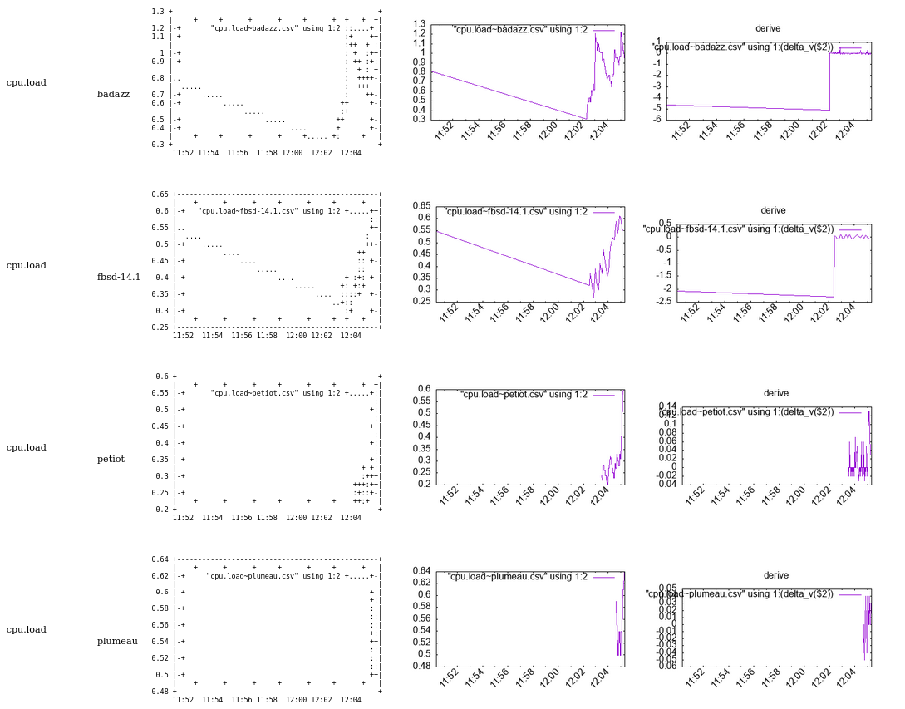
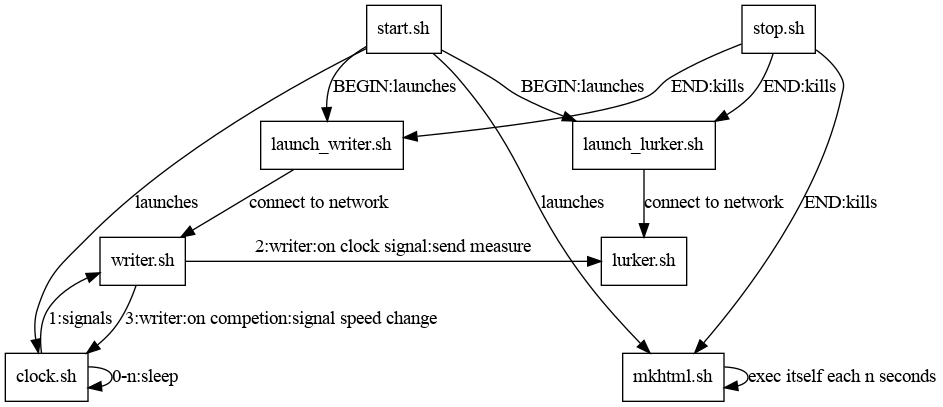

% Fast Adaptive Insecure Monitoring: the monitoring system that should never have been invented, that is fun % jul % 2024-07-07
This project is an implementation of such a way of thinking distributed system. For sake of education I took the most compact language for the task : bash
We are gonne realize on this principle a Fast Adaptative Insecure Monitoring system.
FAIM is designed as a funny experiment of doing a munin clone (doing less) in bash only that is specialized in high speed (~1 seconde / measure) distributed measuring system without a centralized collector.
No broker, no Zmq, no webrtc, no QUIC, no rabbitMQ are used for transport but ... BROADCAST UDP.
Hence, well, this toy is fondamentally insecure and can hardly be ciphered in its current form. But, it enables a category of software that are both educational for doing your own tool AND for deploying an adhoc measuring system.

Perl, python3, gnuplot (gnuplot-lite maybe enough if 1Gb dependency rebukes you), bash, socat, and whatever the plugins have dependencies upon.
./start.shStarts the probe. It will emit (see API of start for network
parameters) on the UDP broadcast address in ASCII excactly what
bin/writer.sh emits on stdout.
To stop the probe simply type
./stop.shLURKER=1 ./start.shWill start the probe AND the data collector. The data collector can
also be caught in a standalone mode with
./bin/launch_lurker.sh or
./bin/launch_lurker.py.
if you go in ./data/ you will see both csv where data are stored accumulating and the making of the html resume.
Just open ./data/index.html to view the graphs.
You can erase the content of data at any moment, everything will reconstruct itself.
What the lurker sees from the broadcast is log into ./log/journal.txt.
CSV files and html can be reconstructed by typing
cat log/journal.log | bin/lurker
bin/mkhtml.shmkhtml is the bash equivalent of PHP or using jinja in python : dynamic html generation.
I seriously advise to install tcpdump, and remember that
tcpdump -A [-i interface] -s0 udp and port 6666 can be a
serious life saviour while troubleshooting.
In order for freebsd Jails to access UDP broadcast, you need to setup a VNET jails
In order for qemu guests to access UDP broadcast, you need to setup a bridge
See diag.dot

EverythingIsAnAgent
Agent communicate by sending and receiving messages (the way they prefer as long as they send messages).
Agent have their own memory and autonomy
Every Agent is an instance of an artifact (which then as to be accounted as an agent).
The Agent is accountable for maintaining its consistency as a state/transition agent
The topology is more important than the code.
each state machine is on a plane for which an uncoupled state machine lays.
violation of uncoupling between layers is bad so it has to be handled with care.
API of each components.
launch_lurker.py
[HOST=0.0.0.0] [PORT=6666] ./launch_lurker
see <file:../start.sh.html> for explanation of the options =back
launch_lurker.shMake data collector available for listening to the probes
[TICK=2] [BROADCAST=192.168.1.255] [RANGE=24] [PORT=6666] ./launch_writer.shFor explanation of options see <file:../start.sh.html>
launch_writer.shMake writer emit on BROADCAST/RANGE ono port PORT
[TICK=2] [BROADCAST=192.168.1.255] [RANGE=24] [PORT=6666] ./launch_writer.shFor explanation of options see <file:../start.sh.html>
lurker.shCollector of data
./lurker.shCan be used as
while [ 1 ]; do writer.sh | lurker.sh; sleep 30; doneTo collect data emitted locally about the machine.
Results are written in ../data
mkhtml
HTML makerGenerator of HTML output from data collected in ../data
[DAEMON=] [SINCE=3600] mkhtml.shCan be used as
./mkhtml.sh to generate the web page in ../data
This code will run permanently waking itself up to update the web page.
The window span time you are interested in in seconds from NOW
writer.shEmitter of data
[TICK=2] ./writer.shFor explanation of options see "start.sh.html" in .
If TICK is set then writer will assume it is to be launched in conjunction with "clock.sh.html" in . and do nothing until clock.sh sends a signal to it to write data.
cpu - FAIM plugin to monitor the CPU loadFreeBSD, linux
Just create cpu_enabled in the plugin dir
None known.
v1.1 - 2024-03-24
Julien Tayon (julien@tayon.net)
GPLv2
acpi_ibm - Munin plugin to monitor the fan speed returned by ACPI probe.
FreeBSD systems with ACPI support. man acpi_ibm(4)
add ibm_acpi in loader.conf
Link this plugin to @@CONFDIR@@/plugins/ and restart the munin-node.
The plugin shows the fans' speeds.
#%# family=auto
#%# capabilities=autoconfNone known.
v1.1 - 2024-03-24
Julien Tayon (julien@tayon.net)
GPLv2
acpii_ibm - Munin plugin to monitor the temperature in different ACPI Thermal zones.
FreeBSD systems with ACPI support. man acpi_ibm(4)
add ibm_acpi in loader.conf
Link this plugin to @@CONFDIR@@/plugins/ and restart the munin-node.
The plugin shows the temperature from the different thermal zones.
#%# family=auto
#%# capabilities=autoconfNone known.
v1.1 - 2024-03-24
Julien Tayon (julien@tayon.net)
GPLv2
interrupts - list number of interrupts since boot (linux) or the interrupt rate per interrupt
No configuration
Idea and base from Ragnar Wisløff.
GPLv2
#%# family=auto
#%# capabilities=autoconfHey! The above document had some coding errors, which are explained below:
Non-ASCII character seen before =encoding in 'Wisløff.'. Assuming UTF-8
open_files - Plugin to monitor the number of open files in the system
No configuration
Unknown author
GPLv2
#%# family=auto
#%# capabilities=autoconfprocesses - Plugin to monitor processes and process states.
This plugin requires munin-server version 1.2.5 or 1.3.3 (or higher).
This plugin is backwards compatible with the old processes-plugins found on SunOS, Linux and *BSD (i.e. the history is preserved).
All fields have colours associated with them which reflect the type of process (sleeping/idle = blue, running = green, stopped/zombie/dead = red, etc.)
No configuration for this plugin.
Copyright (C) 2006 Lars Strand
GNU General Public License, version 2
#%# family=auto
#%# capabilities=autoconfinterrupts - Plugin to monitor the number of interrupts and context switches on a system.
No configuration
Idea and base from Ragnar Wisløff.
GPLv2
#%# family=auto
#%# capabilities=autoconfHey! The above document had some coding errors, which are explained below:
Non-ASCII character seen before =encoding in 'Wisløff.'. Assuming UTF-8
tcp - Plugin to monitor IPV4/6 TCP socket status on a Linux host.
GPLv2